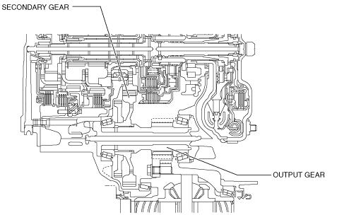

OUTPUT GEAR [EW6A-EL]
id0517l2352100
Purpose/Function
• The output gear transmits the drive force transmitted from the primary gear and secondary gear to the differential.
Construction
• The output gear is engaged with the secondary gear and rotates as a single unit.

am2zzn00002365